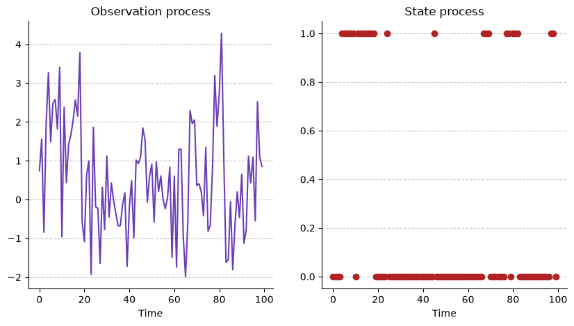

import numpy as np
import matplotlib.pyplot as plt
from scipy.optimize import minimize
from scipy.stats import normnp.random.seed(0)
# Transition probability matrix
Gamma = np.array([[0.9, 0.1], [0.3, 0.7]])
# Define the
m = 2
states = np.arange(m)
# Stationary distribution
A = np.vstack([(Gamma.T - np.eye(m))[:-1], np.ones(m)])
b = np.zeros(m); b[-1] = 1
delta = np.linalg.solve(A, b)
# Observaton process parameters
mu = np.array([0, 2])
sigma = np.array([1, 1])
# Arrays for the results
T = 100
C = np.zeros(T, dtype=int)
Y = np.zeros(T)
# Initial values
C[0] = np.random.choice(states, p=delta)
Y[0] = np.random.normal(loc=mu[C[0]], scale=sigma[C[0]])
for t in range(1, T):
# We choose
C[t] = np.random.choice(states, p=Gamma[C[t-1]])
Y[t] = np.random.normal(loc=mu[C[t]], scale=sigma[C[t]])
# Plots
fig, ax = plt.subplots(ncols=2, figsize=(10,5))
ax[0].plot(np.arange(T), Y, color='#6B3EB8') # Observation process
ax[0].set_title("Observation process")
ax[1].scatter(np.arange(T), C, c='firebrick') # State process
ax[1].set_title("State process")
for i in range(2):
ax[i].spines["top"].set_visible(False)
ax[i].spines["right"].set_visible(False)
ax[i].grid(True, axis='y', linestyle='--', alpha=0.7)
ax[i].set_axisbelow(True)
ax[i].set_xlabel("Time")
np.random.seed(0)
# Transition probability matrix
Gamma = np.array([[0.9, 0.1], [0.3, 0.7]])
m = 2
states = np.arange(m)
# Stationary distribution
A = np.vstack([(Gamma.T - np.eye(m))[:-1], np.ones(m)])
b = np.zeros(m); b[-1] = 1
delta = np.linalg.solve(A, b)
# Observation process parameters
mu = np.array([0, 2])
sigma = np.array([1, 1])
# Simulate data
T = 100
C = np.zeros(T, dtype=int)
Y = np.zeros(T)
C[0] = np.random.choice(states, p=delta)
Y[0] = np.random.normal(loc=mu[C[0]], scale=sigma[C[0]])
for t in range(1, T):
C[t] = np.random.choice(states, p=Gamma[C[t-1]])
Y[t] = np.random.normal(loc=mu[C[t]], scale=sigma[C[t]])
#hi = delta.copy()
# Forward np.exp(algorithm with scalin)g
phi = delta.copy()
log_L_T = 0.0
P0 = np.diag(norm.pdf(Y[0], loc=mu, scale=sigma))
v = phi @ P0
w = v.sum()
log_L_T += np.log(w)
phi = v / w
for t in range(1, T):
Pt = np.diag(norm.pdf(Y[t], loc=mu, scale=sigma))
v = phi @ Gamma @ Pt
w = v.sum()
log_L_T += np.log(w)
phi = v / w
print(np.exp(log_L_T))
print(log_L_T)3.463108345992312e-71
-162.241375050903np.random.seed(0)
# Parámetros verdaderos
Gamma = np.array([[0.9, 0.1], [0.3, 0.7]])
m = 2
states = np.arange(m)
A = np.vstack([(Gamma.T - np.eye(m))[:-1], np.ones(m)])
b = np.zeros(m); b[-1] = 1
delta = np.linalg.solve(A, b)
mu = np.array([0, 2])
sigma = np.array([1, 1])
# Simulación
T = 5000
C = np.zeros(T, dtype=int)
Y = np.zeros(T)
C[0] = np.random.choice(states, p=delta)
Y[0] = np.random.normal(loc=mu[C[0]], scale=sigma[C[0]])
for t in range(1, T):
C[t] = np.random.choice(states, p=Gamma[C[t-1]])
Y[t] = np.random.normal(loc=mu[C[t]], scale=sigma[C[t]])
# Log-verosimilitud negativa
def neg_log_likelihood(params):
tau = params[0:2]
mu_ = params[2:4]
sigma_ = np.exp(params[4:6])
Gamma_ = np.eye(m)
Gamma_[0, 1] = np.exp(tau[0])
Gamma_[1, 0] = np.exp(tau[1])
Gamma_ = Gamma_ / Gamma_.sum(axis=1, keepdims=True)
A_ = np.vstack([(Gamma_.T - np.eye(m))[:-1], np.ones(m)])
b_ = np.zeros(m); b_[-1] = 1
delta_ = np.linalg.solve(A_, b_)
phi = delta_.copy()
log_L_T = 0.0
P0 = np.diag(norm.pdf(Y[0], loc=mu_, scale=sigma_))
v = phi @ P0
w = v.sum()
log_L_T += np.log(w)
phi = v / w
for t in range(1, T):
Pt = np.diag(norm.pdf(Y[t], loc=mu_, scale=sigma_))
v = phi @ Gamma_ @ Pt
w = v.sum()
log_L_T += np.log(w)
phi = v / w
return -log_L_T
# Optimización
init_params = np.array([
0.0, 0.0,
np.mean(Y) - np.std(Y), np.mean(Y) + np.std(Y),
np.log(np.std(Y)), np.log(np.std(Y))
])
log_sigma_min = np.log(0.1 * np.std(Y))
bounds = [
(None, None), (None, None),
(None, None), (None, None),
(log_sigma_min, None), (log_sigma_min, None)
]
result = minimize(neg_log_likelihood, init_params, method="L-BFGS-B", bounds=bounds)
tau_hat = result.x[0:2]
mu_hat = result.x[2:4]
sigma_hat = np.exp(result.x[4:6])
Gamma_hat = np.eye(m)
Gamma_hat[0, 1] = np.exp(tau_hat[0])
Gamma_hat[1, 0] = np.exp(tau_hat[1])
Gamma_hat = Gamma_hat / Gamma_hat.sum(axis=1, keepdims=True)
A_hat = np.vstack([(Gamma_hat.T - np.eye(m))[:-1], np.ones(m)])
b_hat = np.zeros(m); b_hat[-1] = 1
delta_hat = np.linalg.solve(A_hat, b_hat)
print("Real Gamma:\n", Gamma)
print("Estimated Gamma:\n", Gamma_hat)
print()
print("Real mu: ", mu)
print("Estimated mu: ", mu_hat)
print()
print("Real sigma:", sigma)
print("Estimated sigma: ", sigma_hat)
print()
print("Real delta:", delta)
print("Estimated delta: ", delta_hat)Real Gamma:
[[0.9 0.1]
[0.3 0.7]]
Estimated Gamma:
[[0.89923613 0.10076387]
[0.3013713 0.6986287 ]]
Real mu: [0 2]
Estimated mu: [0.00227639 2.05126962]
Real sigma: [1 1]
Estimated sigma: [1.01930637 0.9545137 ]
Real delta: [0.75 0.25]
Estimated delta: [0.74942785 0.25057215]np.random.seed(0)
Gamma = np.array([[0.9, 0.1], [0.3, 0.7]])
m = 2
states = np.arange(m)
A = np.vstack([(Gamma.T - np.eye(m))[:-1], np.ones(m)])
b = np.zeros(m); b[-1] = 1
delta = np.linalg.solve(A, b)
mu = np.array([0, 2])
sigma = np.array([1, 1])
T = 1000
C = np.zeros(T, dtype=int)
Y = np.zeros(T)
C[0] = np.random.choice(states, p=delta)
Y[0] = np.random.normal(loc=mu[C[0]], scale=sigma[C[0]])
for t in range(1, T):
C[t] = np.random.choice(states, p=Gamma[C[t-1]])
Y[t] = np.random.normal(loc=mu[C[t]], scale=sigma[C[t]])
# Starting values for the EM
delta_hat = np.array([0.5, 0.5])
Gamma_hat = np.array([[0.5, 0.5], [0.5, 0.5]])
mu_hat = np.array([np.mean(Y) - np.std(Y), np.mean(Y) + np.std(Y)])
sigma_hat = np.array([np.std(Y), np.std(Y)])
max_iter = 200
tol = 1e-6
log_L_prev = -np.inf
for iteration in range(max_iter):
# Scaled forward
alpha_hat = np.zeros((T, m))
w = np.zeros(T)
P0 = norm.pdf(Y[0], loc=mu_hat, scale=sigma_hat)
v = delta_hat * P0
w[0] = v.sum()
alpha_hat[0] = v / w[0]
for t in range(1, T):
Pt = norm.pdf(Y[t], loc=mu_hat, scale=sigma_hat)
v = (alpha_hat[t-1] @ Gamma_hat) * Pt
w[t] = v.sum()
alpha_hat[t] = v / w[t]
log_L = np.log(w).sum()
# Scaled backward
beta_hat = np.zeros((T, m))
beta_hat[T-1] = 1.0
for t in range(T-2, -1, -1):
Pt1 = norm.pdf(Y[t+1], loc=mu_hat, scale=sigma_hat)
beta_hat[t] = (Gamma_hat @ (Pt1 * beta_hat[t+1])) / w[t+1]
# E-step
u_hat = alpha_hat * beta_hat
v_hat = np.zeros((T, m, m))
for t in range(1, T):
Pt = norm.pdf(Y[t], loc=mu_hat, scale=sigma_hat)
v_hat[t] = (alpha_hat[t-1][:, None] * Gamma_hat * Pt[None, :] * beta_hat[t][None, :]) / w[t]
# M-step
delta_hat = u_hat[0].copy()
f = v_hat[1:].sum(axis=0)
Gamma_hat = f / f.sum(axis=1, keepdims=True)
peso = u_hat.sum(axis=0) # total weight per state
mu_hat = (u_hat * Y[:, None]).sum(axis=0) / peso
sigma_hat = np.sqrt((u_hat * (Y[:, None] - mu_hat)**2).sum(axis=0) / peso)
log_L_prev = log_L
print("delta_hat:", delta_hat)
print("Gamma_hat:\n", Gamma_hat)
print("mu_hat:", mu_hat)
print("sigma_hat:", sigma_hat)
print("log-likelihood:", log_L)delta_hat: [1.87011506e-09 9.99999998e-01]
Gamma_hat:
[[0.88465593 0.11534407]
[0.23018393 0.76981607]]
mu_hat: [-0.14177621 1.90429353]
sigma_hat: [0.97136951 1.00425448]
log-likelihood: -1641.386615607847